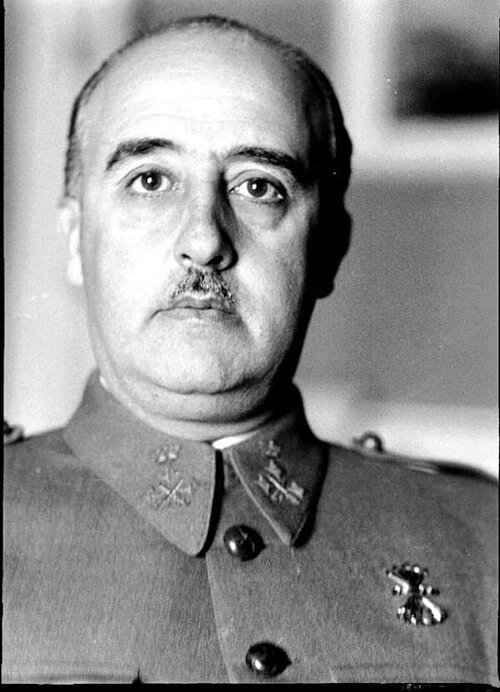

Francisco Franco
Dictador de España desde 1939. Mantuvo al país oficialmente "no beligerante" pero próximo al Eje durante la guerra, sobreviviendo políticamente a la derrota de sus valedores.
Datos
| Nombre completo | Francisco Franco Bahamonde |
|---|---|
| Nacimiento | 4 de diciembre de 1892, Ferrol (España) |
| Fallecimiento | 20 de noviembre de 1975, Madrid |
| Cargo | Jefe del Estado español ("Caudillo"), 1939-1975 |
| Rama | General del Ejército español |
Orígenes y carrera militar
Francisco Franco nació en 1892 en Ferrol, una ciudad de tradición naval en Galicia. Ingresó en la Academia de Infantería y desarrolló su carrera sobre todo en la guerra colonial de Marruecos, donde ascendió con rapidez gracias a su valor y su frialdad, llegando a ser uno de los generales más jóvenes de Europa. Adquirió fama de militar competente, disciplinado y ambicioso, y dirigió la Academia General Militar de Zaragoza.
De carácter reservado y calculador, Franco era conservador, católico y profundamente anticomunista, y desconfiaba del rumbo de la Segunda República proclamada en 1931.
La Guerra Civil española
En julio de 1936, Franco se sumó al golpe de Estado militar contra el gobierno republicano, que desencadenó la Guerra Civil española (1936-1939). Trasladó desde África el aguerrido Ejército de Marruecos —con ayuda de aviones alemanes e italianos— y fue ganando peso hasta ser proclamado, en plena guerra, jefe del Estado y "Generalísimo" de los ejércitos sublevados.
El bando franquista contó con el apoyo militar decisivo de la Alemania nazi (la Legión Cóndor) y de la Italia fascista, mientras la República recibía ayuda soviética. Tras casi tres años de una guerra sangrienta y de una dura represión, Franco se impuso en abril de 1939, pocos meses antes de que estallara la Segunda Guerra Mundial.
La instauración de la dictadura
Franco estableció una dictadura personal y de partido único que duraría casi cuarenta años. Concentró todos los poderes, reprimió con dureza a los vencidos y a la oposición, y construyó un régimen basado en el nacionalcatolicismo, el anticomunismo y el culto a su figura como "Caudillo por la gracia de Dios". El país quedó exhausto y empobrecido por la guerra civil.
La "no beligerancia" en la guerra mundial
Franco estaba en deuda con Hitler y Mussolini y simpatizaba con el Eje, pero la situación de España —arruinada, hambrienta y dependiente de las importaciones controladas por los Aliados— hacía inviable entrar en una nueva guerra. Cuando estalló la Segunda Guerra Mundial, España se declaró primero neutral y, tras la caída de Francia, pasó a la "no beligerancia", una postura favorable al Eje sin llegar a la guerra abierta.
Hendaya y la División Azul
En octubre de 1940, Franco y Hitler se reunieron en Hendaya, en la frontera francesa. Hitler quería que España entrara en la guerra y participara en la toma de Gibraltar, pero Franco puso tantas condiciones —territoriales, económicas y de suministros— que no hubo acuerdo. Hitler comentó después que prefería que le arrancaran varias muelas antes que volver a negociar con Franco.
Pese a mantenerse fuera de la guerra, Franco colaboró con el Eje: permitió el uso de puertos e instalaciones, suministró materias primas estratégicas como el wolframio y envió la División Azul, un contingente de voluntarios que combatió junto a los alemanes en el Frente Oriental contra la Unión Soviética.
El giro hacia la neutralidad
A medida que la guerra se volvía claramente en contra del Eje a partir de 1943, Franco, siempre pragmático, fue distanciándose de sus antiguos valedores y adoptando una neutralidad cada vez más estricta. Retiró la División Azul y moderó su discurso, tratando de presentarse ante los Aliados como un baluarte anticomunista más que como un aliado del fascismo.
Supervivencia y posguerra
Ese cálculo le permitió sobrevivir políticamente a la derrota del Eje en 1945, a diferencia de Hitler y Mussolini. Al principio, la España de Franco quedó aislada y condenada internacionalmente por su origen y su afinidad con las potencias derrotadas. Pero el estallido de la Guerra Fría cambió las tornas: su firme anticomunismo lo convirtió en un socio aceptable para Occidente, especialmente para Estados Unidos, que firmó acuerdos con España a cambio de bases militares. Franco gobernó como dictador hasta su muerte, en 1975, tras la cual España inició su transición a la democracia.
Legado y valoración histórica
Francisco Franco es una figura central y profundamente controvertida de la historia de España del siglo XX. Su hábil neutralidad calculada mantuvo al país fuera de la Segunda Guerra Mundial y le permitió perpetuarse en el poder durante décadas. Al mismo tiempo, su régimen se cimentó sobre una guerra civil, una represión prolongada y la supresión de las libertades. Su valoración sigue generando un intenso debate histórico, político y memorial en la España actual.
← Volver a Líderes